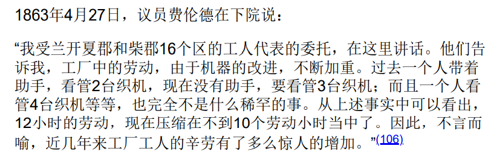

无题
值得怀疑的是，一切已有的机械发明，是否减轻了任何人每天的辛劳。
机器的发展
什么是机器？机器是集合了许多工具的集合体，并且它可以使用自己的工具来代替人完成过去由人完成的动作。于是，人就只能为机器“打杂”、提供原始动力等等。
一旦人不再通过工具作用于自己的劳动对象，而只是作为动力作用于工具机，那么他的可替代性就十分之强。
但是工具机的出现只是一个要素。想要一个工具机同时进行许多任务，那就必须要一种比人力更强大的力量（比如蒸汽机）。
起初，机器也是由手工业生产的；但是随着机器越来越大，手工业生产不了了，因此需要用机器来生产机器。这就是大工业时代的开端。
机器的价值向产品的转移
机器本身具有价值，并且在生产过程中将其价值的一部分转移到其产品中去。
如果生产机器所耗费的劳动等于其所代替的工人的劳动，那么使用机器并不会提高利润，因为者本质上是等价的交换。
但是如果一个机器的价值等于其所代替的劳动力价值，那就是有利可图的。因为:
而劳动力的价值并不包括其创造出来的剩余价值。
这就是说，“对象化在机器本身中的劳动，总是比它所代替的活劳动少得多”。
资本家只会在这样的条件下使用机器：当生产机器所耗费的劳动少于其所代替的工人的劳动力价值时。
但是从使商品便宜的角度看，其实只需要当生产机器所耗费的劳动少于其所代替的劳动力所支出的劳动时即可使用机器了。
资本家仅在前一种情况下使用机器，是因为只有在前一种情况下他们才能获取更大的利润。
这就可以解释为什么有的地方明明可以使用机器替人做苦力活但是却偏偏用人力——维持过剩人口的成本远远小于应用机器。
机器生产对工人的直接影响
占有了女性、儿童劳动力
因为使用机器的生产往往不需要很大的力气，因此机器生产在更大的范围内将童工和女性工人纳入了剥削的范围中，同时男性工人贬值。“机器把工人家庭的全体都抛到劳动市场上”。
同时，由于劳动力的价值还取决于维持工人家庭所需要的生活资料的价值，当工人全家都被抛到劳动市场上时，工资也被平分到了家庭成员身上。工人的无酬劳劳动更多了。
因此，机器从一开始，在增加人身剥削材料，即扩大资本固有的剥削领域的同时，也提高了剥削程度。
并且，剥削领域的扩大还造成了许多惨剧。父母将自己的孩子像奴隶一样租出去赚钱——工人子女出生后头几年死亡率高得惊人(9085/10,000)；母亲违反天性地虐待自己的子女，从而发生故意饿死和毒死的时间。
在工厂区，暗杀儿童、让儿童服鸦片剂的现象十分严重。
延长了工作日
机器是会磨损的。在很多情况下，停机造成的损失，甚至比干开着机器浪费燃料要大（参照电网）。所以工厂主会想尽办法延长工作日，以最少的机器、最少的时间，剥削最多的剩余劳动。
同时，机器会更新换代，新机器出来了，老机器贬值就相当厉害（参照苹果系列电子产品）。所以，为了避免这种风险，资本家也会萌生出延长工作日的强烈动机。
此外，当机器初投产之时，由于其生产率高于社会平均值，所以会产生“额外”的利润。这也是资本家延长工作日的动机——在机器生产暂时处于垄断期时，尽量延长工作日，以获得更多利润。
利用机器生产剩余价值存在着一个内在的矛盾：机器提高了剩余价值率，但是会降低剩余价值的绝对量——由于机器是用原来的可变资本部分换的，如果资本总额不变，雇佣的工人数目就会降低。比如原来雇佣24个人，买完机器就只能雇佣2个人了。为了使绝对的剩余价值量也增加，资本就会设法延长工作日、扩大工厂规模。工厂规模扩大了，便会产生规模效应，“生产成本”便会降低，这便是：
“机器生产的发展使资本中越来越大的组成部分固定在这样一种形式上，在这种形式上，一方面资本可以不断地增值，另一方面一旦资本同活劳动的接触被切断，他就会丧失使用价值和交换价值。”
机器，是生产相对剩余价值的手段，也是生产过剩劳动人口的手段，使得他们不得不听命于资本强加给他们的规律。
Note: 此外，上面提到的扩大规模的倾向，使得成为资本家的资金门槛越来越高。如果规模小，那么规模效应就不显著，剩余价值率就低，就会在与大工厂的竞争中失利。
劳动的强化
工作日无限制延长，将会造成人口质量的退化，从而威胁到剥削的基础（照马克思原话的中文翻译，是“社会的生命根源”）。因此便会出现缩短工作日的要求（不仅是工人要求缩短，统治阶级也会要求缩短）。
类比动量定理 , 劳动时间短了，那就增强劳动强度呗。让机器转得更快、给工人发更多的酬劳（比如计件工资）、使一个工人同时看管更多机器，都可以让劳动强度增大。

工厂
工厂作为一个大型的机器系统，它能够自己完成生产的所有精细复杂的步骤，而人只是作为工厂的附庸。在工场手工业中工人的等级制度消失了，工人之间的差别，主要是年龄和性别。
使用机器十分简单，几乎不需要什么学习、训练，所以在机器上工作的人员可以经常而迅速地更换。
但是，等级制度最终还是被资本拿了过来，用来更好地剥削工人。这种制度使
工人终身服侍一台局部机器。老用机器的目的是要使工人自己从小就转化为局部机器的一部分。这样，不仅工人自身再生产所必须的费用大大减少，而且工人终于毫无办法，只有依赖整个工厂，从而依赖资本家。
并且工厂主还会轻蔑地说：
“工厂工人们应当牢牢记住，他们的劳动实际上是一种极低级的熟练劳动没有一种劳动比它更容易学会，按质量来说比它报酬更高；没有一种劳动能通过对最无经验的人进行短期训练而在这样短的时间这样大量地得到。在生产事务中，主人的机器所起的作用，实际上比工人的劳动和技巧所起的作用重要得多，因为工人的劳动和技巧6个月就可以教完，任何一个雇农6个月就可以学会。”
工人和机器之间的斗争
本来，工场手工业就使得工人只会使用局部工具、从事局部工作（甚至有行会规矩规定学徒一生只可以从事一种局部工作）。而机器的出现，则使得工人所掌握的那一点技巧也失去了交换价值。工人变成了过剩人口（不再为资本的自行增值所直接需要的人口）。
这些“过剩人口”，有的进入了门槛较低的工业部门，有的使自己的劳动力的价格降低到了其价值以下，有的，则直接饿死。
织布工人中，许多人饿死了，许多人长期地每天靠 便士维持一家人的生活。与此相反，英国的棉纺织机在东印度的影响却是急性的。1834—1835年东印度总督确认：“这种灾难在商业史上几乎是绝无仅有的。织布工人的尸骨把印度的平原漂白了。”
这便是为什么会发生工人大规模损毁机器的事件的原因。
关于被机器排挤的工人会得到补偿的理论
有一批资产阶级经济学家断言，所有排挤工人的机器，总是同时地而且必然地游离出相应的资本，去如数雇佣这些被排挤的工人。
但是马克思说明这不可能。
假使价值1500的机器可以顶替价值1500的工人。但是在机器价值这里，, 而在工人的价值这里, .
所以被1500块钱的机器排挤出来的工人本来领的工资也是1500，但是当他们被机器排挤后，生产机器的过程却只需要不到1500块钱雇佣工人——失业产生了。
马克思是这样说明为什么机器不可能补偿失业人口的：
如果机器生产的物品的总量同它所代替的手工业或工场手工业生产的物品的总量相等，那么，所使用的劳动总量就要减少。生产劳动资料本身如机器、煤炭等等所需要的劳动量的增加，同使用机器而引起的劳动量的减少相比，必然较小。不然的话，及其产品就会同手工茶品一样贵，或者更贵。
Note: 工人的工资是他们所生产的产品的一部分转化成的货币。他们用这些货币购买生活资料。而机器将工人排挤，故而对这些商品的需求减少了。如果需求的这种减少没有由需求在其他方面的增加补偿的话，商品的价格就要下降。如果这种降价波及范围较广，那么生产这些商品的工人就要被解雇。
Note: 机器本身没有问题，有问题的是机器的资本主义应用。机器本来可以使得工作时长更短，但是它的资本主义应用反而延长了工作日。
采用机器生产之后，剩余价值量、体现这些剩余价值量的产品量都得到了增加（所谓“物质财富的丰富”），从而也增加了社会的阶层——资本家及资本家的仆从们。社会财富增加、剩余产品的增加，催生了奢侈的需求，并且由于这些奢侈的需求发展出了满足这些需求的手段——以奢侈品的形式将剩余产品再生产出来并且消费掉。
大机器生产使得商品便宜，加上交通运输业的变革，这些便宜的产品夺取了国外的市场，迫使这些地方成为它的原料产地。被机器“制造”出来的“过剩人口”，就移民到了国外。
大工业引起的工场手工业、手工业和家庭劳动的革命
消灭了以手工业为基础的协作。
所谓家庭工业，其实就是工厂的分支结构。
单靠滥用妇女劳动力和未成年劳动力，单靠掠夺一切正常的劳动条件和生活条件，单靠残酷的过度劳动和夜间劳动来实现的劳动力的便宜化，终究会遇到某些不可逾越的自然界限，而以此为基础的商品的便宜化和整个资本主义的剥削，随着也会发生这种情形。当这一点终于达到时（这需要很长的时间），采用机器和把分散的家庭劳动（还有工场手工业）迅速转化为工厂生产的时刻就来到了。
资本家在自己的厂房中集中大量的机器，然后把机器产品分给家庭工人大军去进一步加工。这种加工可以越过法定工作日的界限。
工厂法限制了工作日的长度、休息时间、上下工时间，从而使得工厂需要更多的机器。另一方面，这也迫使资本家扩大其占有的生产资料的规模。由于需要扩大生产资料的规模，这也使得小工厂主和手工业师傅的破产加速了。
对于自己拥有机器的生产者而言，由于机器的更新换代，旧的机器不断贬值并且旧机器生产出的商品的价格竞争力不如新机器，这就迫使他们破产。只有拥有足够资本大量购进机器的资本家可以从使用机器中获利。
工厂立法
工厂立法是社会对其自发生产形态的第一次有意识、有计划的反作用。
为了使工厂建立最基本的清洁和安全措施，必须由国家颁布强制性的法律。
大工业从技术上消灭了那种使得工人终身只能从事某一个局部工作的工场手工业分工。
但是立法时注定会是工人阶级与资产阶级的斗争过程。因此在英国历史上，出台过一些强制工厂主给童工上学、保障健康、限制工作日的法律，但政府并没有为法律的执行指派充足的官员与经费，并且在法条中留下大量微妙的漏洞给工厂主们，从而导致法条几乎就是一纸空文。随着工人斗争的进行，部分法条的执行逐渐变得严格。